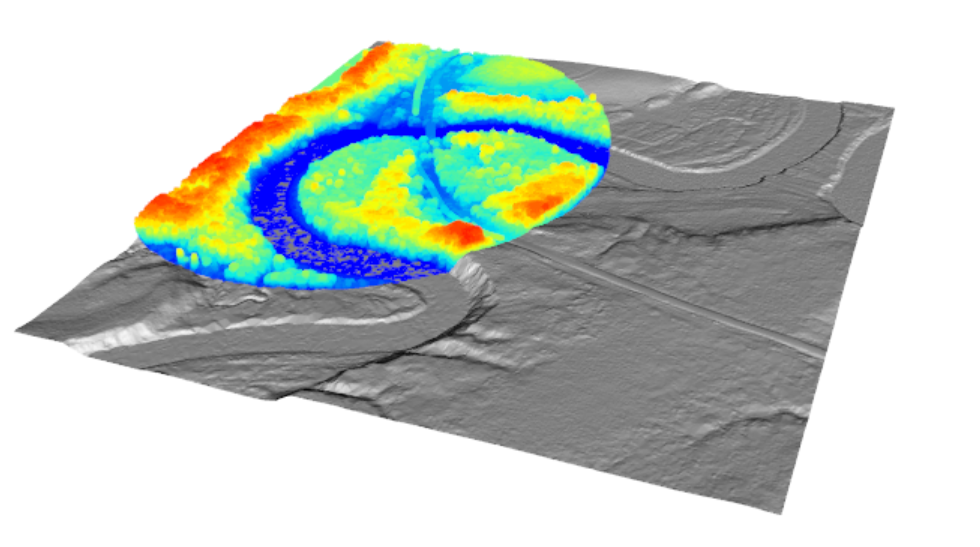
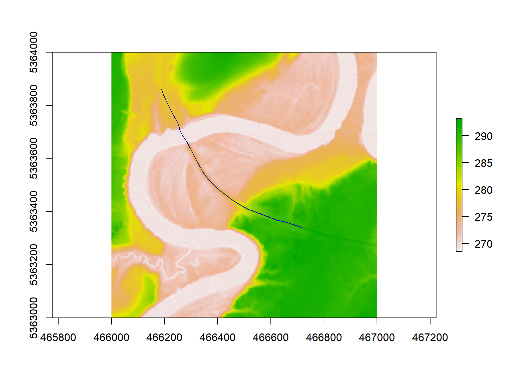

7 Waterbodies
The inclusion of water bodies when using the measure_roads() function is recommended for several reasons, as explained in section @ref(sec-water-bodies).
Here, we provide two road extraction examples where a road crosses a waterbody. In the first example, water bodies are not included as a measure_roads() parameter, but the road is sufficiently wide to be accurately located. In the second example, the road is not detected without the inclusion of water features, and water bodies are included.
7.1 Example 1: Road Extraction without Waterbodies on a Wide Road
In this case study, we use the measure_roads() function to update a road crossing the Mattagami River (rivière Mattagami) in the Romeo Malette Forest, Ontario. The figure below visualizes the LAS tile used in this example and shows the river on the landscape.
las_c <- clip_circle(las, 466200, 5363600, 400)
x <- plot(las_c, bg = "white", size = 3)
add_dtm3d(x, dtm)
7.1.1 Loading Data:
ctg <- readLAScatalog"path/to/ctg/files", filter = "-drop_withheld -keep_random_fraction 0.25")
dtm <- raster("path/to/dtm.tif")
roads <- st_read("path/to/roads")
st_crs(roads) = st_crs(ctg)
roads = sf::st_crop(roads, ctg)By plotting the road which crosses the Mattagami River on a base map, using the mapView() function, we can see that part of this road is a bridge. For more information on interactive plotting with mapView(), refer to section 8.4.1.
url <- "https://servicesmatriciels.mern.gouv.qc.ca:443/erdas-iws/ogc/wmts/Inventaire_Ecoforestier/Inventaire_Ecoforestier/default/GoogleMapsCompatibleExt2:epsg:3/{z}/{y}/{x}.jpg"
m <- mapview::mapview(list(road),
layer.name = c("Waferboard_Road"),
col.regions=list("red"),
map.type = "Esri.WorldImagery")
leaflet::addTiles(m@map, url)7.1.2 Updating Roads
updated_road <- measure_roads(ctg = ctg, roads = road, dtm = dtm)Applying the meaure_roads() function without waterbodies, in this case, does not stop the method from updating the entire road. The width of the roads means that there are many points located on the bridge, and the algorithm interpreters the bridge as a road of Class 1, with an average driable width of 9.1 m,
plot(dtm)
plot(updated_road[1], add = TRUE)
7.2 Example 2: Road Extraction with Waterbodies on a narrow Road
- With waterbodies features
- Without waterbodies
#> Reading layer `roads' from data source `E:\ALSroads_Guide\data\04\roads.shp' using driver `ESRI Shapefile'
#> Simple feature collection with 23 features and 20 fields
#> Geometry type: LINESTRING
#> Dimension: XY
#> Bounding box: xmin: 570000 ymin: 5151000 xmax: 573000 ymax: 5154000
#> Projected CRS: NAD83(CSRS) / UTM zone 17N
#> Reading layer `updated_roads' from data source `E:\ALSroads_Guide\data\04\updated_roads.shp' using driver `ESRI Shapefile'
#> Simple feature collection with 23 features and 28 fields
#> Geometry type: LINESTRING
#> Dimension: XY
#> Bounding box: xmin: 570006.3 ymin: 5151000 xmax: 573000.8 ymax: 5153997
#> Projected CRS: NAD83(CSRS) / UTM zone 17N